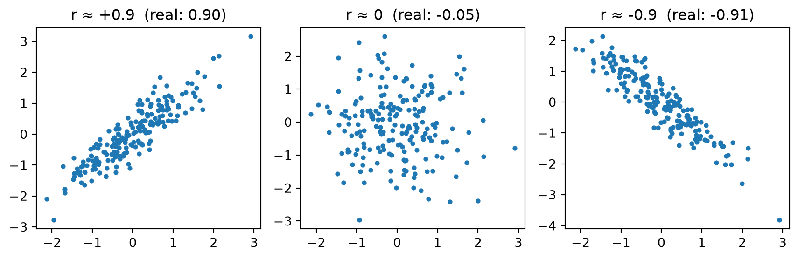
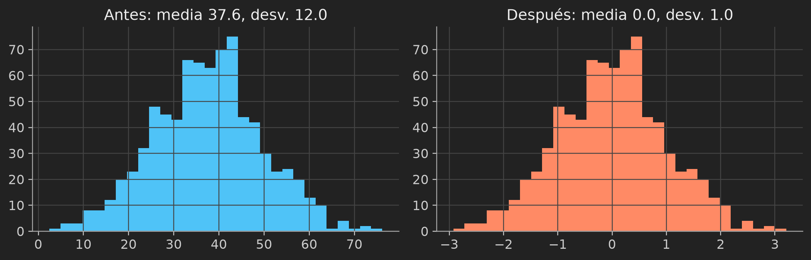
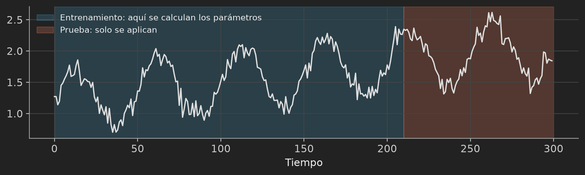
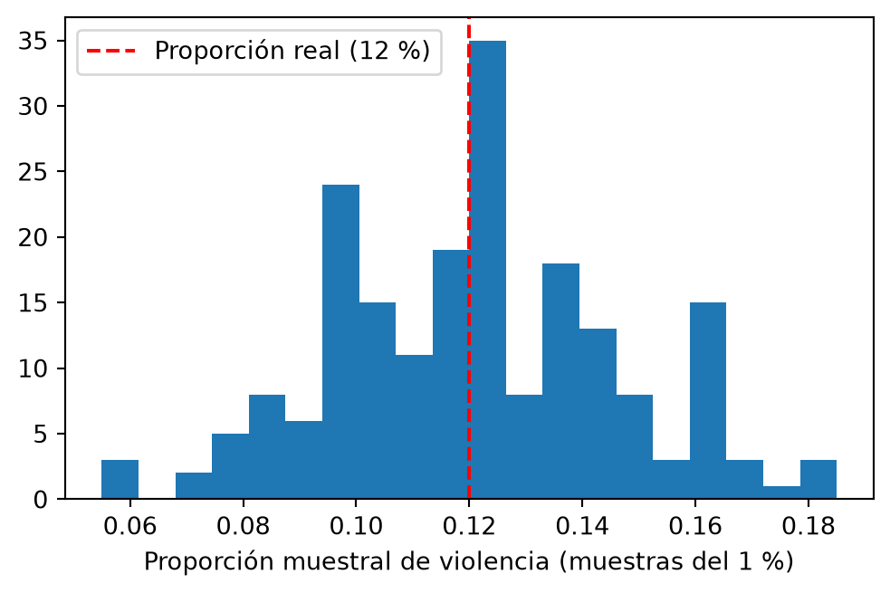

Observados (O):
Sí No
Primaria 30 70
Licenciatura 60 40
Esperados (E):
Sí No
Primaria 45.0 55.0
Licenciatura 45.0 55.0Preparación de Datos: Normalización, Reducción de Dimensionalidad y Reducción de Numerosidad sobre Violencia contra las Mujeres
2026-10-03
En prácticas anteriores los datos de la ENDIREH quedaron limpios: tipos correctos, sin duplicados, sin faltantes.
Aun así, datos limpios no significa datos listos para modelar:
La limpieza no se repite: se parte de data/data-processed/endireh_2021_limpio.csv.
Normalización de texto (cualitativas)
Normalización numérica (cuantitativas)
Normalizar es transformar los valores de una variable para llevarla a una escala comparable con las demás.
\[x' = \frac{x - x_{min}}{x_{max} - x_{min}}\]
Ejemplo: edades 18, 25, 40 y 60 → \(x_{min}=18\), \(x_{max}=60\), denominador \(=42\)
Ventajas
Límites
\[z = \frac{x - \mu}{\sigma}\]
| z | Interpretación |
|---|---|
| 0 | Igual a la media |
| 1 | Una desviación estándar por encima de la media |
| -2 | Dos desviaciones estándar por debajo de la media |
Ventajas
Límites
fit solo con entrenamiento y transform en ambos, para evitar fuga de informaciónChi-cuadrada — ¿esta variable cualitativa está asociada con x columna Si es independiente → candidata a eliminarse.
Correlación de Pearson — ¿estas dos variables cuantitativas dicen lo mismo? Si \(|r| > 0.8\) → una es redundante.
\[\chi^2 = \sum_{i,j} \frac{(O_{ij} - E_{ij})^2}{E_{ij}}\]
| Símbolo | Significado |
|---|---|
| \(\chi^2\) | Estadístico de prueba: qué tan lejos están los datos de la independencia. Más grande = más asociación |
| \(\sum_{i,j}\) | Suma sobre todas las celdas de la tabla de contingencia |
| \(O_{ij}\) | Frecuencia observada: casos reales en la celda \((i,j)\) |
| \(E_{ij}\) | Frecuencia esperada si \(H_0\) fuera cierta (sin asociación) |
| \((O_{ij}-E_{ij})\) | Diferencia entre lo observado y lo esperado |
| \((\cdot)^2\) | Evita que diferencias positivas y negativas se cancelen |
| \(/E_{ij}\) | Una misma diferencia pesa más en celdas pequeñas que en celdas grandes |
\[E_{ij} = \frac{(\text{total de la fila } i)\times(\text{total de la columna } j)}{N}\]
donde \(N\) es el total de casos. Es lo que esperaríamos por azar si la distribución de una variable fuera igual en todas las categorías de la otra.
Observados (O):
Sí No
Primaria 30 70
Licenciatura 60 40
Esperados (E):
Sí No
Primaria 45.0 55.0
Licenciatura 45.0 55.0Si la escolaridad fuera independiente de la violencia, esperaríamos 45 “Sí” en cada fila (el 45 % de 100). Lo observado en cada fila (30 y 60) se aleja bastante de eso.
Sí No
Primaria 5.0 4.091
Licenciatura 5.0 4.091
chi2 = suma de contribuciones = 18.182Cada celda aporta qué tanto se desvía de lo esperado. El \(\chi^2\) final es la suma de todas.
Decisión:
entidad, con 32) aumentan los grados de libertad y exigen revisar bien la tablaLimitaciones
Mide qué tan fuerte y en qué dirección se relacionan linealmente dos variables cuantitativas.
\[r = \frac{\text{cov}(X,Y)}{\sigma_X \, \sigma_Y}, \qquad -1 \le r \le 1\]
Pregunta que responde: cuando una variable sube, ¿la otra tiende a subir, a bajar o no cambia de forma sistemática?
Uso en la práctica: si dos variables tienen \(|r|\) muy alto, aportan casi la misma información (son redundantes) y basta conservar una.
| Símbolo | Significado |
|---|---|
| \(r\) | Coeficiente de correlación: el resultado final, entre \(-1\) y \(1\) |
| \(X, Y\) | Las dos variables cuantitativas que se comparan (por ejemplo, edad y anios_pareja) |
| \(\text{cov}(X,Y)\) | Covarianza: mide si \(X\) y \(Y\) varían juntas (signo) pero depende de las unidades |
| \(\sigma_X, \sigma_Y\) | Desviación estándar de cada variable: cuánto se dispersa cada una |
| \(\sigma_X\sigma_Y\) | Se divide entre este producto para quitar las unidades y dejar un valor comparable |
Por eso \(r\) no cambia si mides la edad en años o en meses: la división elimina la escala.
\[\text{cov}(X,Y) = \frac{\sum_{i=1}^{n}(x_i-\bar{x})(y_i-\bar{y})}{n-1} \qquad \sigma_X = \sqrt{\frac{\sum_{i=1}^{n}(x_i-\bar{x})^2}{n-1}}\]
| Símbolo | Significado |
|---|---|
| \(x_i, y_i\) | Valores de \(X\) y \(Y\) para la persona \(i\) |
| \(\bar{x}, \bar{y}\) | Media de cada variable |
| \((x_i-\bar{x})\) | Desviación de la persona \(i\) respecto a la media: ¿está por encima o por debajo? |
| \(n\) | Número de personas (filas) |
| \(n-1\) | Corrección de muestra (grados de libertad) |
El \(n-1\) aparece arriba y abajo y se cancela, así que la fórmula práctica es:
\[r = \frac{\sum (x_i-\bar{x})(y_i-\bar{y})}{\sqrt{\sum (x_i-\bar{x})^2 \cdot \sum (y_i-\bar{y})^2}}\]
Para cada persona se multiplica \((x_i-\bar{x})\cdot(y_i-\bar{y})\):
Se suman todos los productos:
Cinco mujeres: edad y anios_pareja (años de relación).
edad anios dx dy dx*dy dx^2 dy^2
0 20.0 2.0 -20.0 -18.0 360.0 400.0 324.0
1 30.0 10.0 -10.0 -10.0 100.0 100.0 100.0
2 40.0 18.0 0.0 -2.0 -0.0 0.0 4.0
3 50.0 30.0 10.0 10.0 100.0 100.0 100.0
4 60.0 40.0 20.0 20.0 400.0 400.0 400.0
Medias: edad = 40.0, anios = 20.0Suma dx*dy = 960.0
Suma dx^2 = 1000.0
Suma dy^2 = 928.0
r = 960.0 / sqrt(1000.0 * 928.0) = 0.997
Verificación con numpy: 0.997\(r \approx 0.997\): relación lineal positiva casi perfecta. Las dos variables dicen casi lo mismo.
Signo = dirección
Magnitud \(|r|\) = fuerza (guía aproximada; varía según el campo)
| \(\lvert r \rvert\) | Fuerza |
|---|---|
| 0.0 – 0.3 | Débil |
| 0.3 – 0.7 | Moderada |
| 0.7 – 0.8 | Fuerte |
| > 0.8 | Muy fuerte → candidata a redundancia (criterio de la práctica) |

edad anios_pareja num_hijos
edad 1.00 0.98 0.09
anios_pareja 0.98 1.00 0.08
num_hijos 0.09 0.08 1.00edad y anios_pareja son redundantes (\(|r| > 0.8\)): basta conservar una. num_hijos aporta información distinta.

Cómo leerlo: la diagonal siempre es 1 (cada variable consigo misma); la matriz es simétrica; rojo = positiva, azul = negativa; busca celdas fuera de la diagonal con \(|r| > 0.8\).
Criterios para decidir:
Note
La decisión debe justificarse en el reporte: no es solo un cálculo, también depende del conocimiento del problema.
Hay una relación perfecta (\(y = x^2\)), pero \(r \approx 0\): Pearson solo detecta relaciones lineales.
| Selección (chi², Pearson) | Extracción (PCA) | |
|---|---|---|
| Qué hace | Elige columnas originales | Construye columnas nuevas |
| Interpretabilidad | Alta | Menor (combinaciones lineales) |
| Variables que admite | Cualitativas y cuantitativas | Solo cuantitativas |
| Resultado | Subconjunto de variables | Componentes PC1, PC2, … |
Redundancia: varias variables miden casi lo mismo (edad, anios_pareja, num_hijos crecen juntas). PCA las resume en pocas variables nuevas.
Demasiadas dimensiones: con muchas variables los modelos se sobreajustan, tardan más y los puntos quedan “lejos” entre sí (la maldición de la dimensionalidad).
Visualización: no se puede graficar un espacio de 20 dimensiones, pero sí un plano con PC1 vs. PC2.
PCA no mueve los datos: gira los ejes hasta encontrar las direcciones donde los datos más se extienden.

Cada componente es una combinación lineal de las variables originales (estandarizadas):
\[\text{PC1} = w_{11}\,z_{\text{edad}} + w_{12}\,z_{\text{anios}} + w_{13}\,z_{\text{hijos}} + \dots\]
Ejemplo ilustrativo: si PC1 = 0.55·edad + 0.55·años_pareja + 0.50·hijos + …, una persona mayor, con muchos años de pareja y varios hijos tendrá un PC1 alto.
\[\Sigma\,\mathbf{v}_i = \lambda_i\,\mathbf{v}_i \qquad\qquad \text{Varianza explicada}_i = \frac{\lambda_i}{\sum_{j=1}^{p}\lambda_j}\]
| Símbolo | Significado |
|---|---|
| \(\Sigma\) | Matriz de covarianza (\(p\times p\)): cómo varían juntas todas las variables |
| \(\mathbf{v}_i\) | Vector propio \(i\): la dirección del componente \(i\) (sus pesos) |
| \(\lambda_i\) | Valor propio \(i\): la varianza que captura ese componente |
| \(p\) | Número de variables originales |
| \(\sum_j \lambda_j\) | Varianza total; con datos estandarizados es igual a \(p\) |
| \(k\) | Número de componentes que se conservan (\(k<p\)) |
| \(Z\) | Matriz de datos estandarizados (\(n\times p\)) |
| \(W_k\) | Matriz con los primeros \(k\) vectores propios como columnas |
Solo variables cuantitativas: no tiene sentido aplicarlo directamente a categorías nominales (entidad, estado_civil).
Solo captura relaciones lineales: estructuras curvas o complejas no se resumen bien.
Pérdida de interpretabilidad: PC1 es una mezcla de variables, más difícil de explicar que edad.
Sensible a atípicos y a la escala: estandariza siempre, y revisa valores extremos.
Ajuste solo con entrenamiento: si habrá partición entrenamiento/prueba, haz fit solo en entrenamiento para no filtrar información.
| Técnica | Idea |
|---|---|
| Aleatorio sin reemplazo | Cada registro entra a lo más una vez |
| Aleatorio con reemplazo | Un registro puede salir varias veces (bootstrap) |
| Estratificado | Respeta la proporción de cada grupo |
| Sistemático | Un registro cada \(k\) posiciones |
muestra n prop_violencia edad_media
0 población 20000 0.121 38.244
1 aleatorio 1000 0.111 38.918
2 estratificado 1000 0.121 38.706
3 sistemático 1000 0.107 37.804
Muestras más pequeñas → mayor variabilidad entre una muestra y otra.
Estratificado: ideal cuando la variable objetivo está desbalanceada (pocos casos de violencia).
Sistemático: cómodo, pero peligroso si el archivo viene ordenado (por ejemplo, por entidad).
Factor de expansión: la ENDIREH es una encuesta con diseño muestral; ignorar factor_expansion sesga la prevalencia nacional.
preparacion_datos.pyendireh_2021_limpio.csvsufrio_violencia_parejadata/data-processed/endireh_2021_preparado.csvsrc/cleaning/normalizacion_datos.py completo y ejecutadodata/data-processed/endireh_2021_preparado.csvNote
En los últimos 15 minutos se elegirán 2 personas al azar para explicar el cómo y el por qué de sus decisiones.
Práctica 5 · Minería de Datos